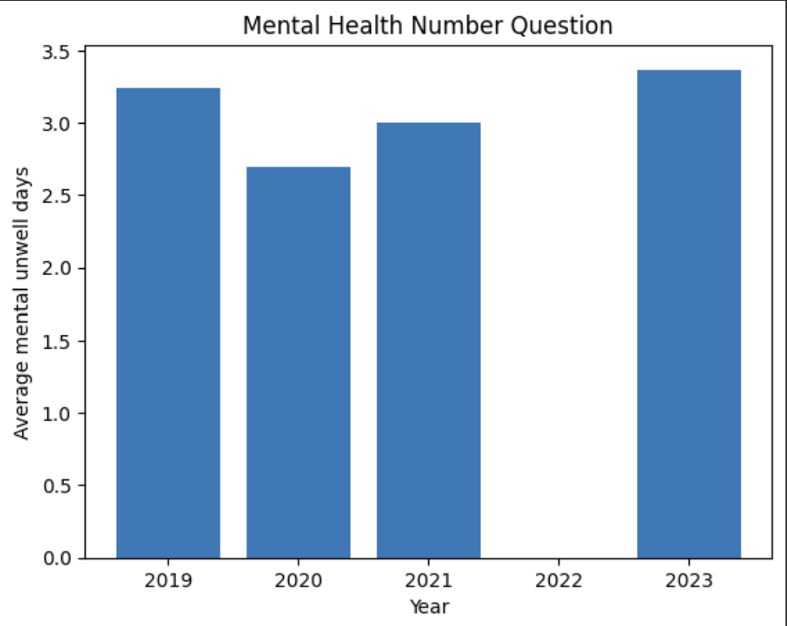
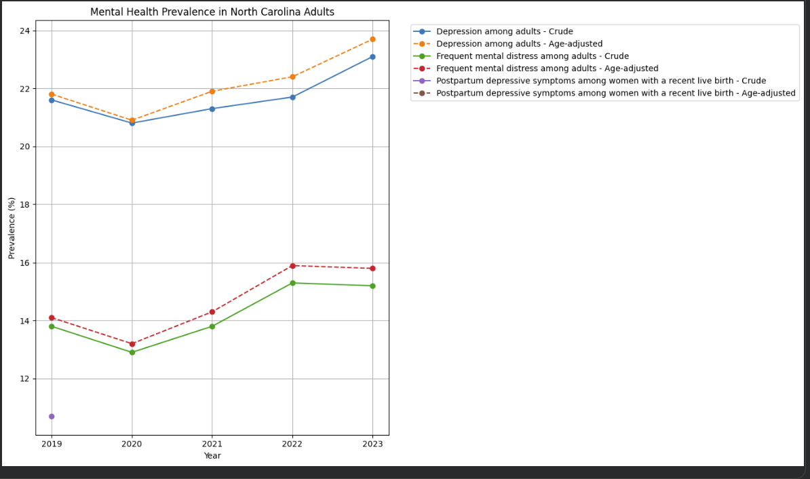
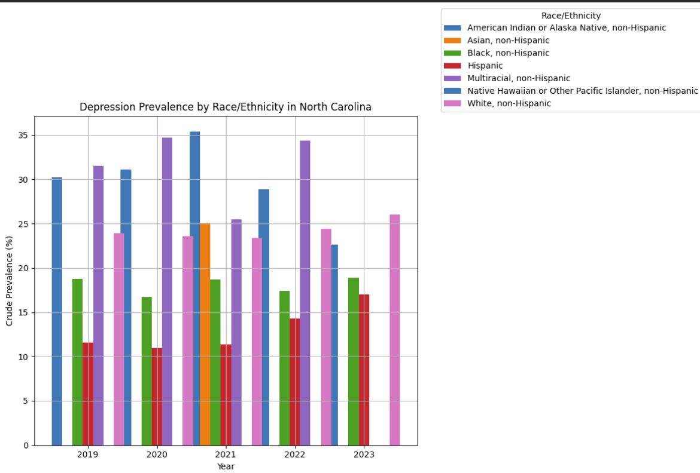

Main Question:
How does mental health impact across the years, demographics,
and states, as well as how does it compare from North Carolina to other
parts of the US?
Audience:
Those in public health, healthcare organizations, and professionals.
Objective:
To be able to create a clearer picture on the dataset
in order to be able to see the impact mental health has on who,
what, and where.
*This dataset is a mix of percentages and numbers, along
with means, averages, ages, prevalence, etc. Data is uniquie to each row.
These visualizations explore mental health from three
perspectives: trends over time, demographic differences,
and geographic variation.
01. Mental Health Days Among Adults
Question:
What is the average mental health days over the years?

What it shows:
Looks at "average mental health days among adults" over the years.
Data from 2022 not reported
*The data from 2022 that is missing is only for the question "average mentally unhealthy days" per year.
*Reason data is missing is not stated in the CDC Chronic Disease Indicator Dataset.
Determine how many mental health days are reported per year
02. Mental Health Prevalence in North Carolina Adults
Question:
What is the prevalence of mental health throughout
the years in North Carolina?

What it shows:
Looks at mental health prevalence in North Carolina through the years, split into categories
Lacking data for postpartum depression
Increasing prevalence of depression and mental distress among adults through the years
03. Depression Prevalence by Race/Ethnicity in North Carolina
Question:
How does the mental health data vary throughout North Carolina?
Such as demographic data.

What it shows:
Looks at "depression among adults" in North Carolina through the years, based on demographics
Not all the data collected it a statistically equal
Shows prevalence of depression based on race/ethnicity
Key Findings
Overall, based on the EDAs, a pattern for mental health prevalence and indicators over time increased.
However, due to the availability of data the results are not 100% accurate.
01. Visualization 1
The data shows similar amounts of reported mental health days among adults through the years
No data from 2022, making it difficult to determine if patterns hold
02. Visualization 2
The data shows an increase in mental health indicators in North Carolina throughout the years
Limited data collected on postpartum depressive symptoms, leading to limiations on conclusions
03. Visualization 3
Higher prevalence of depression in adults based on race/ethniciy
Based on data collected, which is limited in some areas compared to others
Qualitative text analysis:
Theme 1: Mental Health indicators in the United States are looked at through 5 main different questions
Depression among adults
Frequent mental distress among adults
Postpartum depressive symptoms among women with a recent live birth
Current poor mental health among high school students
Average mentally unhealthy days among adults
Theme 2: CDC is looking at mainly adults but high school students are noted
Dashboard
How to Use the Dashboard
This dashboard allows users to explore CDC mental health
prevalence data and compare patterns across years, locations,
and demographic groups.
Getting Started
Choose one two days (number) or precentage (%), based on waht you are looking for. [Data Value Unit]
Choose one of the five percentage-based OR number-based mental health indicators based on the Data Value Unit selected before. [Question]
Select any list of years you would like to look at, as many as you want. [Year Start]
Select any state available, as many as wanted. [Location Desc]
Select a category group, based on data available. [StratificationCategory1]
Select a stratification group, based on data available. [Startification1]
Use the graph and available filters to explore and compare results.
Understanding the Results
The chart updates based on your selections. You can change any filter at any time to explore a different catergory.
Keep in mind: The question "Average number of mental health days" is a number value [ex: 2 days], however the other four questions are percentages [ex: 10% prevalence].
Tip: Select in order from Data Value Unit --> Question --> Year Start --> Location Desc --> StartificationCategory1 --> Stratification1.
Missing Data and Limitations
CDC data data availability varies across years, locations, mental-health measures, and demographic groups.
A missing bar indicates that a value is not available for that selected combination. Missing data does not mean zero prevalence.
Some measures apply only to specific populations. For example, postpartum depressive symptoms are specific to women with a recent live birth, while current poor mental health among high school students applies to high school students.
Available Data Points: The red graph with a value is the number of data points in that specific filtering selected, remember not all filtering has the same data points.
The dashboard supports exploration and identifies patterns for
further investigation. It does not establish why a trend occurred.
Choose comparable CDC Mental Health filters, then view one location-comparison graph and a very short AI explanation. This is population-level data exploration, not an individual assessment.
How the workflow works: 1. Retrieve CDC records → 2. Check data quality → 3. Analyze selected records → LLM explanation.
Choose one data unit. The graph and location lines use this same measure.
North Carolina and the United States are selected initially; choose additional locations to compare.
Choose one group so the location comparison stays consistent.
Distinguishes estimates such as crude and age-adjusted prevalence.
Connecting to CDC data service…
Source: CDC U.S. Chronic Disease Indicators. Missing values are not treated as zero. Comparisons should use the same question, unit, estimate type, and demographic group.
A/B Test
Overall finding: Noticed mental health prevalence increasing from 2021 - 2023
Assumption: Mental health in adults is getting worse
Why care: What can be done about it, anything to reduce the increase?
If adults complete an online mental health
screening, they might be more comfortable reporting their
symptoms. This could potentially lead to mental health
concerns be addressed earlier and maybe reduce the number
of mental health days reported.
Version A: The baseline or current process for screening mental health challenges.
Version B: Including a required online mental health screening survery.
We expect that changing to a required online mental health screening will lead to a reduction in mental health days because there will be a possibility that they will be diagnosed earlier.